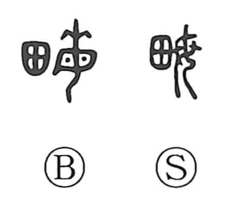

畝

Kun: une, se | On: ho
ridge ・ area unit
Explanation
Shirakawa sees 畝 as a phono-semantic character: the field graph 田 shows cultivated land, while 每 (with 母 as its sound) serves as the phonetic. The Shuowen defines it clearly: six chi make one pace (bu), and a hundred paces make one mu—thus naming the standard area of farmland. Although its exact size varied across eras and regions, it remains a land measure (today about 6.667 ares in China, and in Japan se is roughly 0.99 ares). In Japanese usage it also came to mean the long, narrow ridge raised between furrows in a field.